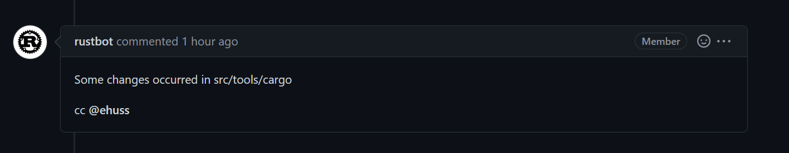
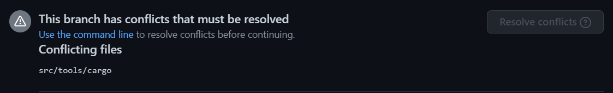
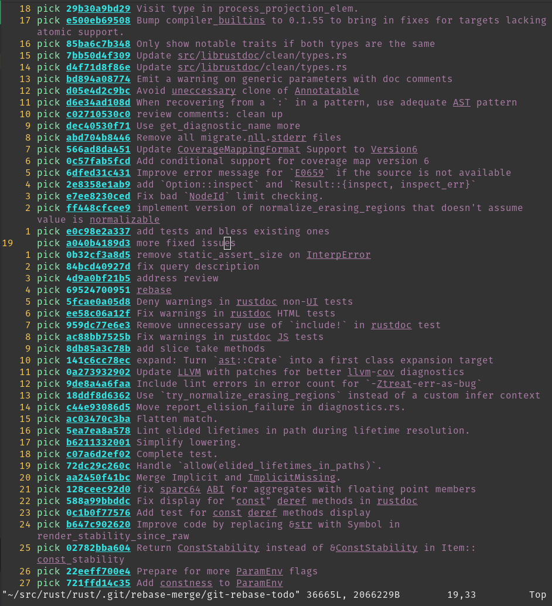
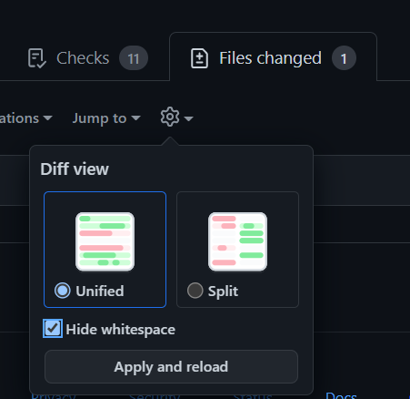
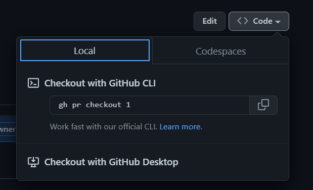

Using Git
The Rust project uses Git to manage its source code. In order to contribute, you’ll need some familiarity with its features so that your changes can be incorporated into the compiler.
The goal of this page is to cover some of the more common questions and problems new contributors face. Although some Git basics will be covered here, if you find that this is still a little too fast for you, it might make sense to first read some introductions to Git, such as the Beginner and Getting started sections of this tutorial from Atlassian. GitHub also provides documentation and guides for beginners, or you can consult the more in depth book from Git.
This guide is incomplete. If you run into trouble with git that this page doesn’t help with, please open an issue so we can document how to fix it.
Prerequisites
We’ll assume that you’ve installed Git, forked rust-lang/rust, and cloned the forked repo to your PC. We’ll use the command line interface to interact with Git; there are also a number of GUIs and IDE integrations that can generally do the same things.
If you’ve cloned your fork, then you will be able to reference it with origin in your local repo.
It may be helpful to also set up a remote for the official rust-lang/rust repo via
git remote add upstream https://github.com/rust-lang/rust.git
if you’re using HTTPS, or
git remote add upstream git@github.com:rust-lang/rust.git
if you’re using SSH.
NOTE: This page is dedicated to workflows for rust-lang/rust, but will likely be
useful when contributing to other repositories in the Rust project.
Standard Process
Below is the normal procedure that you’re likely to use for most minor changes and PRs:
- Ensure that you’re making your changes on top of
main:git checkout main. - Get the latest changes from the Rust repo:
git pull upstream main --ff-only. (see No-Merge Policy for more info about this). - Make a new branch for your change:
git checkout -b issue-12345-fix. - Make some changes to the repo and test them.
- Stage your changes via
git add src/changed/file.rs src/another/change.rsand then commit them withgit commit. Of course, making intermediate commits may be a good idea as well. Avoidgit add ., as it makes it too easy to unintentionally commit changes that should not be committed, such as submodule updates. You can usegit statusto check if there are any files you forgot to stage. - Push your changes to your fork:
git push --set-upstream origin issue-12345-fix(After adding commits, you can usegit pushand after rebasing or pulling-and-rebasing, you can usegit push --force-with-lease). - Open a PR from your fork to
rust-lang/rust’smainbranch.
If you end up needing to rebase and are hitting conflicts, see Rebasing. If you want to track upstream while working on long-running feature/issue, see Keeping things up to date.
If your reviewer requests changes, the procedure for those changes looks much the same, with some steps skipped:
- Ensure that you’re making changes to the most recent version of your code:
git checkout issue-12345-fix. - Make, stage, and commit your additional changes just like before.
- Push those changes to your fork:
git push.
Troubleshooting git issues
You don’t need to clone rust-lang/rust from scratch if it’s out of date!
Even if you think you’ve messed it up beyond repair, there are ways to fix
the git state that don’t require downloading the whole repository again.
Here are some common issues you might run into:
I made a merge commit by accident.
Git has two ways to update your branch with the newest changes: merging and rebasing.
Rust uses rebasing.
If you make a merge commit, it’s not too hard to fix: git rebase -i upstream/main.
See Rebasing for more about rebasing.
I deleted my fork on GitHub!
This is not a problem from git’s perspective.
If you run git remote -v,
it will say something like this:
$ git remote -v
origin git@github.com:jyn514/rust.git (fetch)
origin git@github.com:jyn514/rust.git (push)
upstream https://github.com/rust-lang/rust (fetch)
upstream https://github.com/rust-lang/rust (fetch)
If you renamed your fork, you can change the URL like this:
git remote set-url origin <URL>
where the <URL> is your new fork.
I changed a submodule by accident
Usually people notice this when rustbot posts a comment on github that cargo has been modified:

You might also notice conflicts in the web UI:

The most common cause is that you rebased after a change and ran git add . without first running
x to update the submodules.
Alternatively, you might have run cargo fmt instead of x fmt
and modified files in a submodule, then committed the changes.
To fix it, do the following things (if you changed a submodule other than cargo,
replace src/tools/cargo with the path to that submodule):
- See which commit has the accidental changes:
git log --stat -n1 src/tools/cargo - Revert the changes to that commit:
git checkout <my-commit>~ src/tools/cargo. Type~literally but replace<my-commit>with the output from step 1. - Tell git to commit the changes:
git commit --fixup <my-commit> - Repeat steps 1-3 for all the submodules you modified.
- If you modified the submodule in several different commits, you will need to repeat steps 1-3
for each commit you modified.
You’ll know when to stop when the
git logcommand shows a commit that’s not authored by you.
- If you modified the submodule in several different commits, you will need to repeat steps 1-3
for each commit you modified.
You’ll know when to stop when the
- Squash your changes into the existing commits:
git rebase --autosquash -i upstream/main - Push your changes.
I see “error: cannot rebase” when I try to rebase
These are two common errors to see when rebasing:
error: cannot rebase: Your index contains uncommitted changes.
error: Please commit or stash them.
error: cannot rebase: You have unstaged changes.
error: Please commit or stash them.
(See https://git-scm.com/book/en/v2/Getting-Started-What-is-Git%3F#_the_three_states for the difference between the two.)
This means you have made changes since the last time you made a commit. To be able to rebase, either commit your changes, or make a temporary commit called a “stash” to have them still not be committed when you finish rebasing. You may want to configure git to make this “stash” automatically, which will prevent the “cannot rebase” error in nearly all cases:
git config --global rebase.autostash true
See https://git-scm.com/book/en/v2/Git-Tools-Stashing-and-Cleaning for more info about stashing.
I see ‘Untracked Files: src/stdarch’?
This is left over from the move to the library/ directory.
Unfortunately, git rebase does not follow renames for submodules, so you
have to delete the directory yourself:
rm -r src/stdarch
I see <<< HEAD?
You were probably in the middle of a rebase or merge conflict.
See Conflicts for how to fix the conflict.
If you don’t care about the changes
and just want to get a clean copy of the repository back, you can use git reset:
# WARNING: this throws out any local changes you've made! Consider resolving the conflicts instead.
git reset --hard main
failed to push some refs
git push will not work properly and say something like this:
! [rejected] issue-xxxxx -> issue-xxxxx (non-fast-forward)
error: failed to push some refs to 'https://github.com/username/rust.git'
hint: Updates were rejected because the tip of your current branch is behind
hint: its remote counterpart. Integrate the remote changes (e.g.
hint: 'git pull ...') before pushing again.
hint: See the 'Note about fast-forwards' in 'git push --help' for details.
The advice this gives is incorrect!
Because of Rust’s “no-merge” policy, the merge commit created by git pull
will not be allowed in the final PR, in addition to defeating the point of the rebase!
Use git push --force-with-lease instead.
Git is trying to rebase commits I didn’t write?
If you see many commits in your rebase list, or merge commits, or commits by other people that you
didn’t write, it likely means you’re trying to rebase over the wrong branch.
For example, you may
have a rust-lang/rust remote upstream, but ran git rebase origin/main instead of git rebase upstream/main.
The fix is to abort the rebase and use the correct branch instead:
git rebase --abort
git rebase --interactive upstream/main
Click here to see an example of rebasing over the wrong branch

Quick note about submodules
When updating your local repository with git pull, you may notice that sometimes
Git says you have modified some files that you have never edited.
For example,
running git status gives you something like (note the new commits mention):
On branch main
Your branch is up to date with 'origin/main'.
Changes not staged for commit:
(use "git add <file>..." to update what will be committed)
(use "git restore <file>..." to discard changes in working directory)
modified: src/llvm-project (new commits)
modified: src/tools/cargo (new commits)
no changes added to commit (use "git add" and/or "git commit -a")
These changes are not changes to files: they are changes to submodules (more on this later). To get rid of those:
git submodule update
Some submodules are not actually needed; for example, src/llvm-project doesn’t need to be checked
out if you’re using download-ci-llvm.
To avoid having to keep fetching its history, you can use
git submodule deinit -f src/llvm-project, which will also avoid it showing as modified again.
Rebasing and Conflicts
When you edit your code locally, you are making changes to the version of rust-lang/rust that existed when you created your feature branch. As such, when you submit your PR, it is possible that some of the changes that have been made to rust-lang/rust since then are in conflict with the changes you’ve made. When this happens, you need to resolve the conflicts before your changes can be merged. To do that, you need to rebase your work on top of rust-lang/rust.
Rebasing
To rebase your feature branch on top of the newest version of the main branch
of rust-lang/rust, checkout your branch, and then run this command:
git pull --rebase https://github.com/rust-lang/rust.git main
If you are met with the following error:
error: cannot pull with rebase: Your index contains uncommitted changes. error: please commit or stash them.it means that you have some uncommitted work in your working tree. In that case, run
git stashbefore rebasing, and thengit stash popafter you have rebased and fixed all conflicts.
When you rebase a branch on main, all the changes on your branch are
reapplied to the most recent version of main.
In other words, Git tries to
pretend that the changes you made to the old version of main were instead
made to the new version of main.
During this process, you should expect to encounter at least one “rebase conflict”.
This happens when Git’s attempt to
reapply the changes fails because your changes conflicted with other changes that have been made.
You can tell that this happened because you’ll see lines in the output that look like
CONFLICT (content): Merge conflict in file.rs
When you open these files, you’ll see sections of the form
<<<<<<< HEAD
Original code
=======
Your code
>>>>>>> 8fbf656... Commit fixes 12345
This represents the lines in the file that Git could not figure out how to rebase.
The section between <<<<<<< HEAD and ======= has the code from
main, while the other side has your version of the code.
You’ll need to decide how to deal with the conflict.
You may want to keep your changes,
keep the changes on main, or combine the two.
Generally, resolving the conflict consists of two steps: First, fix the particular conflict.
Edit the file to make the changes you want and remove the
<<<<<<<, ======= and >>>>>>> lines in the process.
Second, check the surrounding code.
If there was a conflict, its likely there are some logical errors lying around too!
It’s a good idea to run x check here to make sure there are no glaring errors.
Once you’re all done fixing the conflicts, you need to stage the files that had
conflicts in them via git add.
Afterwards, run git rebase --continue to let
Git know that you’ve resolved the conflicts and it should finish the rebase.
Once the rebase has succeeded, you’ll want to update the associated branch on
your fork with git push --force-with-lease.
Keeping things up to date
The above section is a specific guide on rebasing work and dealing with merge conflicts. Here is some general advice about how to keep your local repo up-to-date with upstream changes:
Using git pull upstream main while on your local main branch regularly will keep it up-to-date.
You will also want to keep your feature branches up-to-date as well.
After pulling, you can checkout the feature branches and rebase them:
git checkout main
git pull upstream main --ff-only # to make certain there are no merge commits
git rebase main feature_branch
git push --force-with-lease # (set origin to be the same as local)
To avoid merges as per the No-Merge Policy, you may want to use
git config pull.ff only (this will apply the config only to the local repo)
to ensure that Git doesn’t create merge commits when git pulling, without
needing to pass --ff-only or --rebase every time.
You can also git push --force-with-lease from main to double-check that your
feature branches are in sync with their state on the GitHub side.
Advanced Rebasing
Squash your commits
“Squashing” commits into each other causes them to be merged into a single commit. Both the upside and downside of this is that it simplifies the history. On the one hand, you lose track of the steps in which changes were made, but the history becomes easier to work with.
The easiest way to squash your commits in a PR on the rust-lang/rust repository is to use the @bors squash command in a comment on the PR. By default, bors combines all commit messages of the PR into the squashed commit message. To customize the commit message, use @bors squash msg=<commit message>.
If you want to squash commits using local git operations, read on below.
If there are no conflicts and you are just squashing to clean up the history,
use git rebase --interactive --keep-base main.
This keeps the fork point of your PR the same, making it easier to review the diff of what happened
across your rebases.
Squashing can also be useful as part of conflict resolution.
If your branch contains multiple consecutive rewrites of the same code, or if
the rebase conflicts are extremely severe, you can use
git rebase --interactive main to gain more control over the process.
This allows you to choose to skip commits, edit the commits that you do not skip,
change the order in which they are applied, or “squash” them into each other.
Alternatively, you can sacrifice the commit history like this:
# squash all the changes into one commit so you only have to worry about conflicts once
git rebase --interactive --keep-base main # and squash all changes along the way
git rebase main
# fix all merge conflicts
git rebase --continue
You also may want to squash just the last few commits together, possibly
because they only represent “fixups” and not real changes.
For example,
git rebase --interactive HEAD~2 will allow you to edit the two commits only.
git range-diff
After completing a rebase, and before pushing up your changes, you may want to
review the changes between your old branch and your new one.
You can do that with git range-diff main @{upstream} HEAD.
The first argument to range-diff, main in this case, is the base revision
that you’re comparing your old and new branch against.
The second argument is
the old version of your branch; in this case, @upstream means the version that
you’ve pushed to GitHub, which is the same as what people will see in your pull request.
Finally, the third argument to range-diff is the new version of
your branch; in this case, it is HEAD, which is the commit that is currently
checked-out in your local repo.
Note that you can also use the equivalent, abbreviated form git range-diff main @{u} HEAD.
Unlike in regular Git diffs, you’ll see a - or + next to another - or +
in the range-diff output.
The marker on the left indicates a change between the
old branch and the new branch, and the marker on the right indicates a change you’ve committed.
So, you can think of a range-diff as a “diff of diffs” since
it shows you the differences between your old diff and your new diff.
Here’s an example of git range-diff output (taken from Git’s docs):
-: ------- > 1: 0ddba11 Prepare for the inevitable!
1: c0debee = 2: cab005e Add a helpful message at the start
2: f00dbal ! 3: decafe1 Describe a bug
@@ -1,3 +1,3 @@
Author: A U Thor <author@example.com>
-TODO: Describe a bug
+Describe a bug
@@ -324,5 +324,6
This is expected.
-+What is unexpected is that it will also crash.
++Unexpectedly, it also crashes. This is a bug, and the jury is
++still out there how to fix it best. See ticket #314 for details.
Contact
3: bedead < -: ------- TO-UNDO
(Note that git range-diff output in your terminal will probably be easier to
read than in this example because it will have colors.)
Another feature of git range-diff is that, unlike git diff, it will also diff commit messages.
This feature can be useful when amending several commit
messages so you can make sure you changed the right parts.
git range-diff is a very useful command, but note that it can take some time
to get used to its output format.
You may also find Git’s documentation on the
command useful, especially their “Examples” section.
No-Merge Policy
The rust-lang/rust repo uses what is known as a “rebase workflow”.
This means that merge commits in PRs are not accepted.
As a result, if you are running
git merge locally, chances are good that you should be rebasing instead.
Of course, this is not always true; if your merge will just be a fast-forward,
like the merges that git pull usually performs, then no merge commit is
created and you have nothing to worry about.
Running git config merge.ff only (this will apply the config to the local repo)
once will ensure that all the merges you perform are of this type, so that you
cannot make a mistake.
There are a number of reasons for this decision, and like all others, it is a tradeoff. The main advantage is the generally linear commit history. This greatly simplifies bisecting and makes the history and commit log much easier to follow and understand.
Tips for reviewing
NOTE: This section is for reviewing PRs, not authoring them.
Hiding whitespace
GitHub has a button for disabling whitespace changes that may be useful.
You can also use git diff -w origin/main to view changes locally.

Fetching PRs
To checkout PRs locally, you can use git fetch upstream pull/NNNNN/head && git checkout FETCH_HEAD.
You can also use github’s cli tool. GitHub shows a button on PRs where you can copy-paste the command to check it out locally. See https://cli.github.com/ for more info.

Using GitHub dev
As an alternative to the GitHub web UI, GitHub Dev provides a web-based editor for browsing
repository and PRs.
It can be opened by replacing github.com with github.dev in the URL
or by pressing . on a GitHub page.
See the docs for github.dev editor
for more details.
Moving large sections of code
Git and GitHub’s default diff view for large moves within a file is quite poor; it will show each line as deleted and each line as added, forcing you to compare each line yourself. Git has an option to show moved lines in a different color:
git log -p --color-moved=dimmed-zebra --color-moved-ws=allow-indentation-change
See the docs for --color-moved for more info.
range-diff
See the relevant section for PR authors. This can be useful for comparing code that was force-pushed to make sure there are no unexpected changes.
Ignoring changes to specific files
Many large files in the repo are autogenerated. To view a diff that ignores changes to those files, you can use the following syntax (e.g. Cargo.lock):
git log -p ':!Cargo.lock'
Arbitrary patterns are supported (e.g. :!compiler/*). Patterns use the same syntax as
.gitignore, with : prepended to indicate a pattern.
Git submodules
NOTE: submodules are a nice thing to know about, but it isn’t an absolute
prerequisite to contribute to rustc.
If you are using Git for the first time,
you might want to get used to the main concepts of Git before reading this section.
The rust-lang/rust repository uses Git submodules as a way to use other
Rust projects from within the rust repo.
Examples include Rust’s fork of
llvm-project, cargo, and libraries like stdarch and backtrace.
Those projects are developed and maintained in a separate Git (and GitHub)
repository, and they have their own Git history/commits, issue tracker and PRs.
Submodules allow us to create some sort of embedded sub-repository inside the
rust repository and use them like they were directories in the rust repository.
Take llvm-project for example.
llvm-project is maintained in the rust-lang/llvm-project
repository, but it is used in rust-lang/rust by the compiler for code generation and optimization.
We bring it in rust as a submodule, in the src/llvm-project folder.
The contents of submodules are ignored by Git: submodules are in some sense isolated
from the rest of the repository.
However, if you try to cd src/llvm-project and then run git status:
HEAD detached at 9567f08afc943
nothing to commit, working tree clean
As far as git is concerned, you are no longer in the rust repo, but in the llvm-project repo.
You will notice that we are in “detached HEAD” state, i.e. not on a branch but on a
particular commit.
This is because, like any dependency, we want to be able to control which version to use.
Submodules allow us to do just that: every submodule is “pinned” to a certain
commit, which doesn’t change unless modified manually.
If you use git checkout <commit>
in the llvm-project directory and go back to the rust directory, you can stage this
change like any other, e.g. by running git add src/llvm-project. (Note that if
you don’t stage the change to commit, then you run the risk that running
x will just undo your change by switching back to the previous commit when
it automatically “updates” the submodules.)
This version selection is usually done by the maintainers of the project, and looks like this.
Git submodules take some time to get used to, so don’t worry if it isn’t perfectly clear yet. You will rarely have to use them directly and, again, you don’t need to know everything about submodules to contribute to Rust. Just know that they exist and that they correspond to some sort of embedded subrepository dependency that Git can nicely and fairly conveniently handle for us.
Hard-resetting submodules
Sometimes you might run into (when you run git status)
Changes not staged for commit:
(use "git add <file>..." to update what will be committed)
(use "git restore <file>..." to discard changes in working directory)
(commit or discard the untracked or modified content in submodules)
modified: src/llvm-project (new commits, modified content)
and when you try to run git submodule update it breaks horribly with errors like
error: RPC failed; curl 92 HTTP/2 stream 7 was not closed cleanly: CANCEL (err 8)
error: 2782 bytes of body are still expected
fetch-pack: unexpected disconnect while reading sideband packet
fatal: early EOF
fatal: fetch-pack: invalid index-pack output
fatal: Fetched in submodule path 'src/llvm-project', but it did not contain 5a5152f653959d14d68613a3a8a033fb65eec021. Direct fetching of that commit failed.
If you see (new commits, modified content) you can run
git submodule foreach git reset --hard
and then try git submodule update again.
Deinit git submodules
If that doesn’t work, you can try to deinit all git submodules…
git submodule deinit -f --all
Unfortunately sometimes your local git submodules configuration can become completely messed up for some reason.
Overcoming fatal: not a git repository: <submodule>/../../.git/modules/<submodule>
Sometimes, for some forsaken reason, you might run into
fatal: not a git repository: src/gcc/../../.git/modules/src/gcc
In this situation, for the given submodule path, i.e. <submodule_path> = src/gcc in this example, you need to:
rm -rf <submodule_path>/.gitrm -rf .git/modules/<submodule_path>/configrm -rf .gitconfig.lockif somehow the.gitconfiglock is orphaned.
Then do something like ./x fmt to have bootstrap manage the submodule checkouts for you.
Ignoring commits during git blame
Some commits contain large reformatting changes that don’t otherwise change functionality.
They can be instructed to be ignored by git blame through
.git-blame-ignore-revs:
- Configure
git blameto use.git-blame-ignore-revsas the list of commits to ignore:git config blame.ignorerevsfile .git-blame-ignore-revs - Add suitable commits that you wish to be ignored by
git blame.
Please include a comment for the commit that you add to .git-blame-ignore-revs so people can
easily figure out why a commit is ignored.